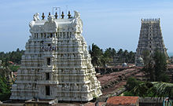
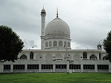
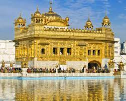
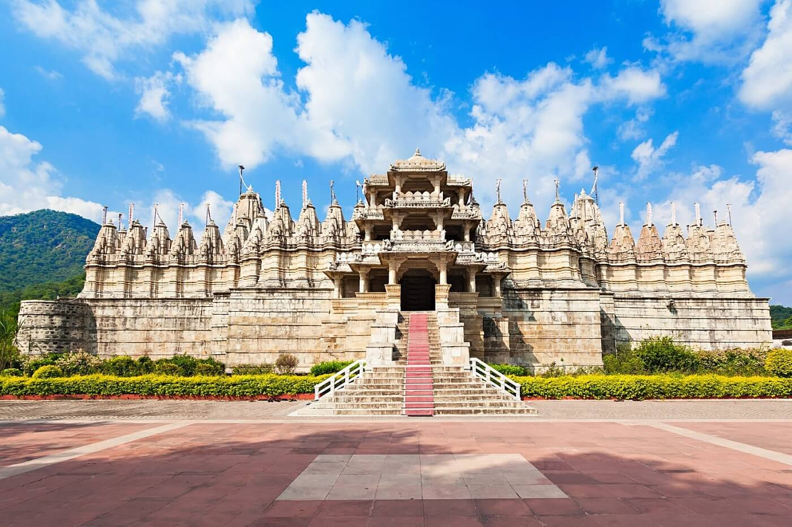

- The Ramanathaswamy Temple is a very important hindu religious site located in Rameswaram,India.
- The temple considered a holy pilgrimage site for Shaivites, Vaishnavites and Smarthas.
- The temple is very significant because it is both one of the 4 Dhams and the 12 Jyotirlingas.
- It is said that The presiding deity, the Linga of Ramanathaswamy (Shiva), was established and worshiped by Rama before
crossing his bridge to Lanka to absolve him of the sin of killing a Brahmin.
- There are 2 lingas in the temple Ramalinga(Built by Rama) and Vishwalinga(Brought by hanuman from Kailash).
- According to legend Rama instructed that the vishwaling must be worshipped first as it was brought by hanuman. The
tradition continues even today.
|

- The Hazratbal Shrine, popularly called Dargah Sharif ("the Holy Shrine"), is a Muslim shrine
located in Hazratbal, Srinagar.
- It is reputed for being the location of the relic, Moi-e-Muqqadas, which is widely believed to be the hair of the Islamic
prophet Muhammad.
- The relic was first brought to Kashmir by Syed Abdullah Madani, a professed descendant of Muhammad who left Medina
(present-day Saudi Arabia) and settled in the city of Bijapur in 1635, at a time when the Mughal Empire
was rapidly expanding across India.
- The relic is displayed for public view only on special Islamic occasions, such as the birthdays of Muhammad and his
four main companions.
|

- The Golden Temple also known as the Harmandir Sahib ('abode of God'),or the Darbar Sahib ('exalted court'),
is a gurdwara located in the city of Amritsar, Punjab.
- It is the preeminent spiritual site of Sikhism.
- The gurdwara is built around a man-made pool that was completed by the fourth Sikh Guru,
Guru Ram Das, in 1577.
- Continuing the efforts of Guru Ram Das, Guru Arjan established Amritsar as a primary Sikh pilgrimage
destination.
- He wrote a voluminous amount of Sikh scripture including the popular Sukhmani Sahib.
- Maharaja Ranjit Singh, after founding the Sikh Empire, overlaid
the sanctum with Gold foil in 1830. This has led to the name the Golden Temple.
- The temple is also frequently visited by buddhists as Buddha declared this site as an ideal meditation ground
for sadhus and saints.
|

- The Palitana temples are the large groups of Jain temples located on Shatrunjaya hills near
Palitana, Gujarat.
- The Palitana temples have 800 small shrines and large temples. This has led many to call it the
city of temples.
- It is one of the most sacred sites of Jainism.
- The temples were buith in the 11th century.
- The main temple is dedicated to Rishabhanatha, the first Tirthankara.
- More than 400,000 pilgrims visited this pilgrimage in 2010.
- It is beleived that 23 of the 24 tirthankaras sactified the hills by their visit.
- These temples are reached by most pilgrims and visitors by climbing 3500 stone steps.
- Jains believe that a visit to this group of temples is essential as a once-in-a-lifetime
chance to achieve nirvana or salvation.
|